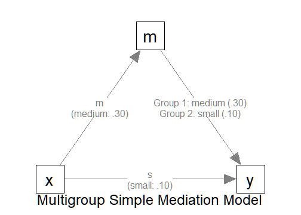

Multigroup Sample Size Determination: Path Models of Observed Variables
2026-03-17
Source:vignettes/articles/n_from_power_mediation_mg_obs_simple.Rmd
n_from_power_mediation_mg_obs_simple.RmdIntroduction
This article illustrates how to do power analysis and sample size determination in some typical observed variable path models, when the test of interest is detecting the between-group difference in an indirect path. The package power4mome will be used for illustration.
Prerequisite
Basic knowledge about fitting models by lavaan and
power4mome is required.
This file is not intended to be an introduction on how to use
functions in power4mome. For details on how to use
power4test(), refer to the Get-Started
article. Please also refer to the help page of
n_region_from_power(), and the article
on n_from_power(), which is called twice by
n_region_from_power() to find the regions described
below.
Scope
A simple mediation model of observed variables will be used as an example. Users new to the package are recommended to read the article on the steps for a path model with observed variables having a multivariate normal distribution (the default).
Set Up the Model and Test
Load the packages first:
Estimate the power for a sample size.
The code for the model:
model <-
"
m ~ x
y ~ m + x
"
model_es <-
"
m ~ x: m
y ~ m:
- m
- s
y ~ x: s
"To specify a multigroup model, at least one of the parameter
(y ~ m in this example) needs to have two or more values.
One way to specify them is as shown above: one line for each value,
indented by at least one space, after a hyphen.
In the example above, there are two groups because there are two
values for the path y ~ m. For the first group, Group 1,
the path is medium (m). For the second group, Group 2, the
path is small (s).
All other paths have only one value, and so all groups have the same values for these paths.

The Model
Setup the Model
This section illustrates how to set up the call to
power4test(). We would like to check the model first.
Therefore, the test of indirect effect is not added for now.
out <- power4test(
nrep = 600,
model = model,
pop_es = model_es,
n = 100,
iseed = 1234,
parallel = TRUE)By default, all groups are assumed to have the same sample size.
Therefore, only one value of n is needed.
There are two ways to specify the sample sizes if the groups are expected to have different sample sizes.
-
First, the argument
ncan be a numeric vector of the sample size of each group.- For example,
n = c(100, 200)indicates that Group 1 has 100 cases and Group 2 has 200 cases.
- For example,
-
Second, the argument
n_ratiocan be used to specify the sample size for each group using one single value ofn.- For example,
n = 100andn_ratio = c(1, 0.5)indicates that Group 1 has 100 cases and Group 2 has 100 multiplied by 0.5 or 200 cases.
- For example,
To illustrate how to use other functions that accepts only one sample
size, we use n_ratio in the following illustration.
out <- power4test(
nrep = 600,
model = model,
pop_es = model_es,
n = 100,
n_ratio = c(1, 0.5),
iseed = 1234,
parallel = TRUE)Check The Simulation
We now check the simulation:
outThis is part of the output on the population values:
#> ====== Population Values ======
#>
#>
#> Group 1 [Group1]:
#>
#> Regressions:
#> Population
#> m ~
#> x 0.300
#> y ~
#> m 0.300
#> x 0.100
#>
#> Variances:
#> Population
#> .m 0.910
#> .y 0.882
#> x 1.000
#>
#>
#> Group 2 [Group2]:
#>
#> Regressions:
#> Population
#> m ~
#> x 0.300
#> y ~
#> m 0.100
#> x 0.100
#>
#> Variances:
#> Population
#> .m 0.910
#> .y 0.974
#> x 1.000
#>
#> == Population Conditional/Indirect Effect(s) ==
#>
#> == Indirect Effect(s) ==
#>
#> ind
#> Group1.x -> m -> y 0.090
#> Group2.x -> m -> y 0.030
#>
#> - The 'ind' column shows the indirect effect(s).
#> As shown in the output, there are two set of population values, one
for each group. The two groups differ on the regression path
y ~ m, as we expected.
NOTE: The population values are for the standardized solution.
Therefore, a difference in the path y ~ m also results in
differences in related variances and error variances (the error
variances of y in this case). This will not affect the
power of some tests, such as a test of the difference in the
unstandardized paths when no constraints are imposed on variances and
error variances.
If indirect paths are present, the indirect effects for each group
will be printed automatically. As shown above, the two groups have
different population indirect effects for the path
x -> m -> y.
If the group is a multigroup model, by default, a multigroup model
will be fitted by lavaan::sem(). This is part of the output
on the model fit to one set of data.
#> ============ <fit> ============
#>
#> lavaan 0.6-21 ended normally after 1 iteration
#>
#> Estimator ML
#> Optimization method NLMINB
#> Number of model parameters 14
#>
#> Number of observations per group:
#> Group1 100
#> Group2 50
#>
#> Model Test User Model:
#>
#> Test statistic 0.000
#> Degrees of freedom 0
#> Test statistic for each group:
#> Group1 0.000
#> Group2 0.000As shown above, a two-group model is fitted. Moreover, the two samples have different sample sizes, as specified in the call: Group 1 has 100 cases and Group 2 has 50 cases.
Add the Test and Estimate Power
We now can add the test and estimate power. For a multigroup model
with indirect paths, when tested using the manymome
package, used by power4mome, the indirect effects will be
treated “as” conditional indirect effects, with group as the
“moderator”. This test can be conducted using
test_cond_indirect_effects(). This function is very similar
to test_indirect_effect() describe in the article.
If the group is a multigroup model, the indirect path will be estimated
and tested in each group automatically.
Our interest is in testing the difference in the indirect
effect. To do this, we add compare_groups = TRUE to the
argument of the test.
R_for_bz(200) is used to set R to the
largest value less than 200 that is supported by the method proposed by
Boos & Zhang (2000). 1
Note that
out <- power4test(
nrep = 600,
model = model,
pop_es = model_es,
n = 100,
R = R_for_bz(200),
ci_type = "mc",
test_fun = test_cond_indirect_effects,
test_args = list(x = "x",
m = "m",
y = "y",
mc_ci = TRUE,
compare_groups = TRUE),
iseed = 1234,
parallel = TRUE)The rejection rate (power) for this example can be found by
rejection_rates():
rejection_rates(out)
#> [test]: test_cond_indirect_effects: x->m->y
#> [test_label]: x->m->y | Group2 - Group1
#> est p.v reject r.cilo r.cihi
#> 1 -0.060 1.000 0.178 0.150 0.211
#> Notes:
#> - p.v: The proportion of valid replications.
#> - est: The mean of the estimates in a test across replications.
#> - reject: The proportion of 'significant' replications, that is, the
#> rejection rate. If the null hypothesis is true, this is the Type I
#> error rate. If the null hypothesis is false, this is the power.
#> - r.cilo,r.cihi: The confidence interval of the rejection rate, based
#> on Wilson's (1927) method.
#> - Refer to the tests for the meanings of other columns.As shown in the test label, the test is a test of the difference in direct effects between the two groups. Therefore, the rejection rate, power in this case, is the power to detect the difference.
Testing Multigroup Difference in Other Functions
Other functions that make use of power4test() can also
be used for multigroup models. However, most of them supports only one
single value of n. Therefore, n_ratio is
needed to specify the sample size for each group.
For example, the output above can be used directly by
n_from_power() to find sample sizes given a target power,
with n_ratio fixed.
n_power <- n_from_power(
out,
target_power = .80,
final_nrep = 2000,
seed = 1234
)Note that the search for sample size in multigroup model can be slow
(sometimes very slow), given the additional processes involved.
Therefore, other faster approximate approaches are recommended for
finding the approximate sample sizes, which can be verified using
power4test() using a larger number of replications
(nrep).
(NOTE: For this example, because the difference is in only one path,
a faster approach is to do power analysis on testing the difference in
this single path, which can be done in power4mome using
test_parameters() with
compare_groups = TRUE.)
The output can also be used directly by n_power_region()
to find a region of sample sizes given a target power:
n_power_region <- n_region_from_power(
out,
seed = 1357
)